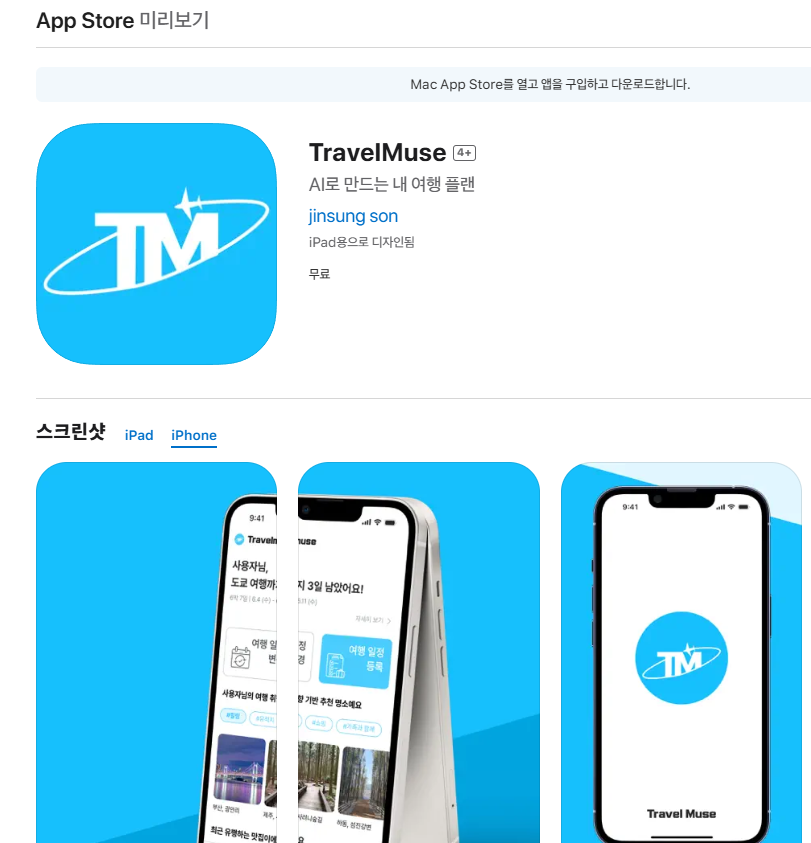
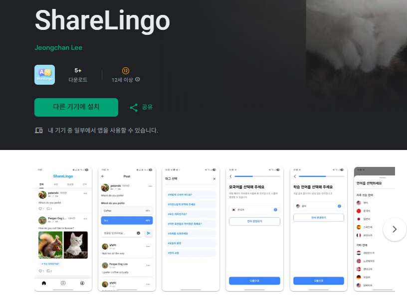
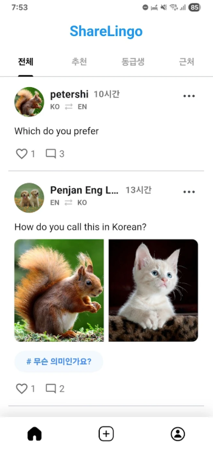

1. TravelMuse - AI 기반 여행 일정 추천 앱

📅 프로젝트 기간: 2025.05.29 ~ 2025.07.07
🎯 목표: 성향 테스트 기반의 AI 맞춤 여행 추천 앱 개발 및 UX 개선
📲 iOS 배포 링크:
App Store에서 TravelMuse 보기
🛠 주요 기능
- AI 성향 테스트 및 Gemini 기반 여행지 자동 추천
- 지도 기반 루트 시각화 및 일정 커스터마이징
- 실시간 여행 일정 최적화 및 저장 기능
- 마이페이지, 커뮤니티 기능 포함
💡 기술 스택
- Flutter (MVVM + Riverpod)
- Firebase (Auth, Firestore, Storage, Functions, Analytics)
- Gemini API - AI 여행지 추천 로직
- Kakao/Google 지도 API - 위치 기반 루트 표시
👨💻 본인 역할
- AI 성향 테스트 구현
- AI 추천받기 기능 로직 처리 및 UI 연결
- 커뮤니티 글 작성, 수정, 삭제 기능 개발
- 홈화면 UI / 거리순 정렬 / 검색 기능 구현
2. ShareLingo - 글로벌 언어교류 SNS 앱


📅 프로젝트 기간: 2025.05 ~ 2025.05
🎯 목표: 글로벌 유저 간 실시간 언어 교류와 게시글 기반 학습 시스템 구축
🔗 배포 링크:
구글플레이에서 sharelingo 보기
🛠 주요 기능
- 언어/지역 기반 게시글 필터링
- 게시글/댓글 작성, 수정, 삭제
- YOLO 기반 이미지 안전성 필터링
- 좋아요, 투표, 신고 기능 구현
💡 기술 스택
- Flutter + Riverpod + 클린 아키텍쳐
- Firebase Auth, Firestore, Storage, Cloud Functions
- YOLOv8 + TFLite로 이미지 필터링
- GitHub Actions 기반 CI/CD 파이프라인
👨💻 본인 역할
- 글 작성, 수정, 삭제 기능 전체 구현
- YOLO 이미지 필터링 및 태그/투표 기능 연동
- 좋아요 기능 구현
3. PeopleJob - 취업사이트 클론 리뉴얼 (진행 중)
📅 진행 기간: 2025.06 ~ 현재
🎯 목표: 기존 2019년 Java 기반 취업 플랫폼을 최신 기술로 리뉴얼하고, 웹과 앱을 완전히 분리하여 REST API 기반 구조로 재설계
🛠 주요 작업 내용
- 기존 프로젝트 리팩토링 및 최신 기술 도입 (Spring Boot + Flutter)
- REST API 설계 및 Flutter 앱과의 통신 구축
- 회원가입, 로그인, 공고, 이력서, 지원 등 CRUD 기능 API 구현
- AWS EC2 + Docker + GitHub Actions + RDS 기반 배포 예정
🧩 현재 상태
- 백엔드 API 기능 구현 중 (JWT 인증 포함)
- Flutter 프론트엔드 UI 구성 및 라우팅 작업 진행 중
- 완료 후 포트폴리오 사이트에 정식 추가 예정
트러블슈팅
1. TravelMuse - Kakao API 과호출 오류
AI 분석 후 다량의 장소명을 Kakao API로 동시에 호출하면서 HTTP 429 (Too Many Requests) 오류가 발생했습니다.
콜백 함수를 Future<void>로 명확히 지정하고 await을 사용하여 중복 호출을 방지했습니다.
또한 호출 횟수 제한 로직을 추가해 안정성을 높였습니다.
2. ShareLingo - BuildContext async 경고
Firestore 저장 또는 이미지 업로드 후 Navigator.pop(context)를 사용할 때,
Flutter의 경고 "Do not use BuildContext across async gaps"이 발생했습니다.
이를 해결하기 위해 if (context.mounted) 조건을 추가하여 안정성을 확보했습니다.